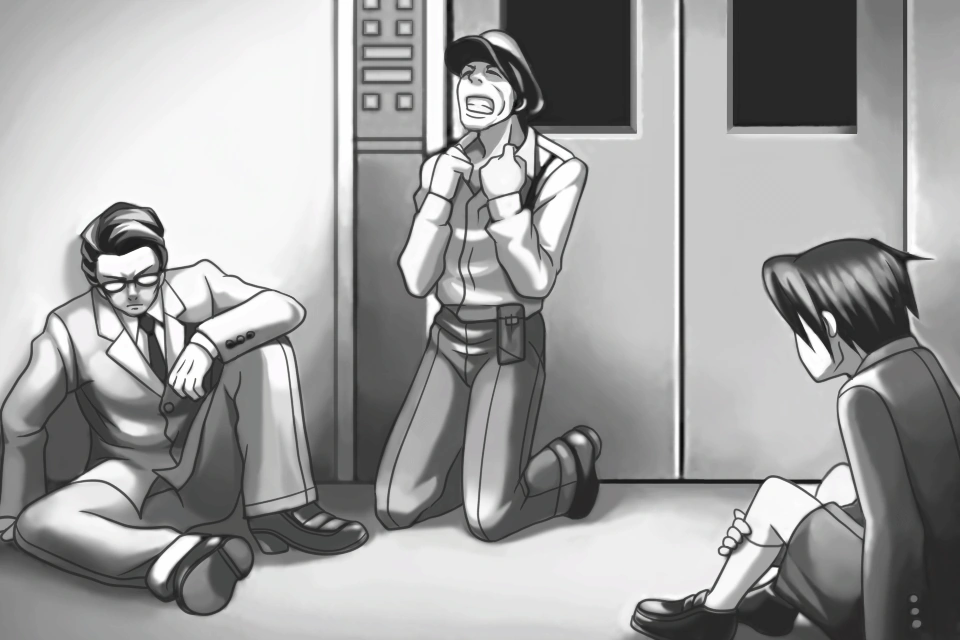
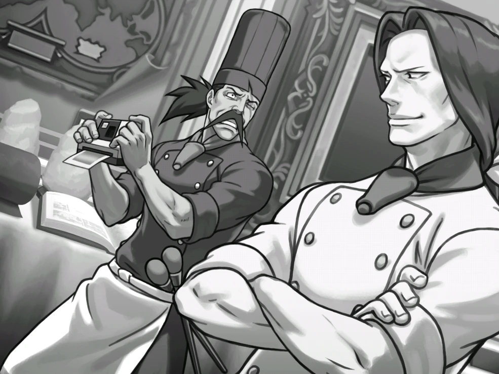
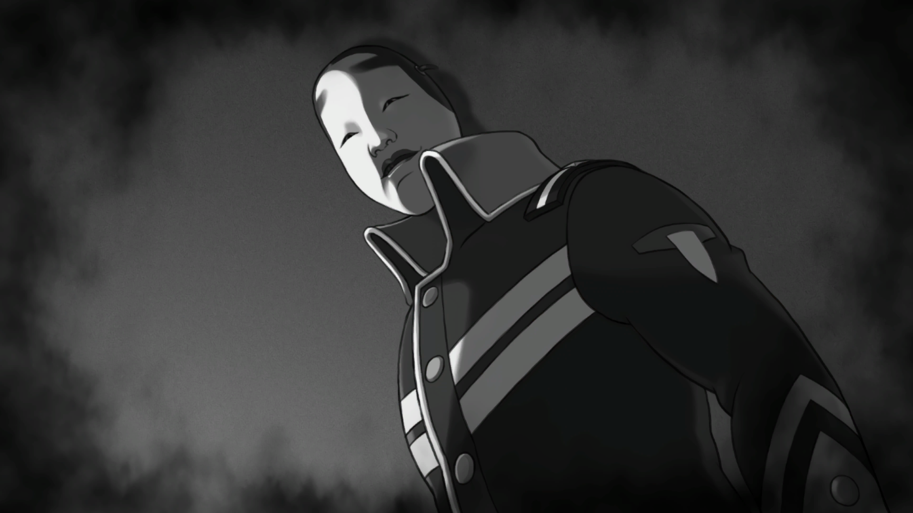

Incidentes
Definiciones
- DL-6
- El incidente DL-6 es el nombre que la policía le asignó a un caso muy importante en la saga, saliendo a relucir en el cuarto episodio del videojuego
Phoenix Wright: Ace Attorney. Su importancia se debe a que impactó de forma directa o indirecta en las vidas de varios personajes, como Miles Edgeworth,
Misty Fey, Maya Fey, Dahlia Hawthorne o Manfred von Karma, entre otros. Muchísimos de los hechos en toda la saga de Ace Attorney no habrían pasado de no
ser por este incidente.
- SL-9
- El Incidente SL-9, también llamado los asesinatos de Joe Darke, fue una serie de asesinatos que culminaron con la muerte del fiscal Neil Marshall en
el Departamento de Asuntos Penales de Los Ángeles. Esto llevó a juicio a Joe Darke, quien fue condenado como culpable y ejecutado.
- IS-7
- El Incidente IS-7 fue un asesinato que ocurrió en la mansión de Issei Tenkai en el 23 de Diciembre de 2000. Está directamente con el Incidente DL-6 e
indirectamente relacionado con el Incidente SS-5. Issei Tenkai, un famoso chef de televisión, fue acusado de cometer el asesinato de Isaku Hyodo. Su abogado
defensor, Gregory Edgeworth, se enfrentó al infame fiscal Manfred von Karma. Gregory perdió el caso, pero se las arregló para probar que von Karma manipuló el
informe de autopsia, ya que nunca hallaron el cuerpo. Como resultado, la acusación de Tenkai de ser el asesino cambio a ser un cómplice y von Karma recibió su
primera y única penalización. El caso estuvo en espera por 18 años, debido a que el testigo y el otro sospechoso, Yukata Kazami, huyó a Zheng Fa.
- KG-8
- El Incidente KG-8 se refiere a un asesinato ocurrido en 2009. La víctima, Cece Tejo, fue la única testigo de los turbios negocios del Grupo Amano con la Red
de contrabando de Cohdopia, lo que desencadenó un escándalo en torno a la empresa. El principal sospechoso del asesinato, Manny Coachen, fue declarado inocente
ante el tribunal debido al robo de pruebas clave de la fiscalía. Todo este asunto dio origen al Gran Ladrón Yatagarasu.
- UR-1
- El Incidente UR-1 es el nombre del archivo policial acerca del asesinato de la doctora Metis Cykes, esto ocurrido en el Centro Espacial Cosmos en el año 2020.
El asesinato ocurrió en el Laboratorio, ocurrido con una katana y la causa de muerte, por desangramiento. Si bien Athena Cykes, la hija de la doctora Metis, fue
encontrada en la escena del crimen, el acusado fue el aprendiz de Metis, Simon Blackquill. El juicio terminó con un veredicto de culpabilidad aunque Athena protestara
debido a que "su corazón estaba gritando que no lo hizo". El incidente fue resuelto en 2027 con Phoenix Wright como defensa y Miles Edgeworth como fiscalía.
| Incidente |
Imagen |
| DL-6 |
 |
| IS-7 |
 |
| UR-1 |
 |
Pulsa los personajes para ir a su wikipedia
Volver a la primera página
Ir al formulario